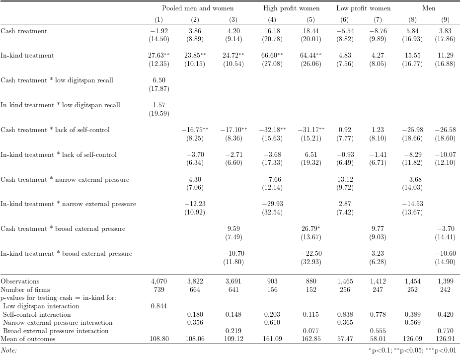

To read the created .tex file, the following \(\LaTeX\) packages are required:
The means of outcome variables are added to the table, which do not appear in the original table in the paper.
# Install and load packages ---------------
packages <- c(
"tidyverse",
"haven",
"lfe",
"stargazer",
"broom",
"kableExtra",
"magrittr"
)
pacman::p_load(packages, character.only = TRUE, install = TRUE)
# Load an example dataset ---------------
data <- read_dta("data/ReplicationDataGhanaJDE.dta")df_table8 <- data %>%
mutate(
norm7 = (norms_7 %in% c("Agree", "Strongly agree")),
norm8 = (norms_8 %in% c("Agree", "Strongly agree")),
norm9 = (norms_9 %in% c("Agree", "Strongly agree")),
norm12 = (norms_12 %in% c("Agree", "Strongly agree"))
) %>%
group_by(sheno) %>%
mutate(
basesusu = ifelse(wave == 1, useasusu, NA),
saveregular = ifelse(is.na(save_reg), NA, (save_reg %in% c(4, 5))),
pressurehh = ifelse(is.na(pressure_share_otherhh), NA, (pressure_share_otherhh %in% c(1, 2))),
dis1 = Discount_MedianRevised,
hyp1 = Discount_HyperbolicRevised,
mwave2lowK = ifelse(wave == 2, (inventories < 50), NA),
lowdigitspan = ifelse(is.na(digitspan), NA, (digitspan <= 5))
) %>%
fill(basesusu, matches("^mr(1|2)"), mwave2lowK, .direction = "downup") %>%
ungroup()
# function to obtain the first principal component from PCA
pca_prediction <- function(var_list, data) {
predict(
prcomp(
data %>%
filter(wave == 1) %>%
select(all_of(var_list)) %>%
na.omit(),
center = TRUE, scale = TRUE
),
data
)[,1]
}
df_table8 <- df_table8 %>%
mutate(
mpca = - pca_prediction(c("useasusu", "saveregular", "dis1", "hyp1"), df_table8),
mpca3 = - pca_prediction(c("dis1", "hyp1"), df_table8),
mextp1 = pca_prediction(
c("pressurehh", "HouseholdSize", "norm7", "norm8", "norm9", "sibsAccra", "married"),
df_table8
),
mextp2 = pca_prediction(c("pressurehh", "norm7", "norm8", "norm9"), df_table8),
) %>%
group_by(sheno) %>%
mutate(
across(
.cols = c("mpca", "mpca3", "mextp1", "mextp2"),
.fns = function(x) ifelse(is.infinite(max(x, na.rm = TRUE)), NA, max(x, na.rm = TRUE))
)
) %>%
ungroup()outcome <- "realfinalprofit"
fe_1 <- "groupnum"
fe_2 <- "sheno"
iv <- "0"
cluster <- "sheno"
# list of right hand-side variables for each regression
rhs_var_list <- vector(mode = "list", length = 9)
for (i in seq(9)) {
if (i == 1) {
rhs_var_list[[i]] = c("lowdigitspan")
} else if (i %in% c(2, 4, 6, 8)) {
rhs_var_list[[i]] = c("mpca", "mextp2")
} else if (i %in% c(3, 5, 7, 9)) {
rhs_var_list[[i]] = c("mpca", "mextp1")
}
}
# list of functions to filter data and create subsample for each regression
data_filter_list <- vector(mode = "list", length = 9)
for (i in seq(9)) {
if (i %in% c(1, 2, 3)) {
data_filter_list[[i]] <- function(x) filter(x, is.na(trimgroup))
} else if (i %in% c(4, 5)) {
data_filter_list[[i]] <- function(x) filter(x, is.na(trimgroup) & female == 1 & highgroup == 1)
} else if (i %in% c(6, 7)) {
data_filter_list[[i]] <- function(x) filter(x, is.na(trimgroup) & female == 1 & mlowgroup == 1)
} else if (i %in% c(8, 9)) {
data_filter_list[[i]] <- function(x) filter(x, is.na(trimgroup) & male == 1)
}
}
# function to run regressions with fixed effects
felm_table8 <- function(rhs_var, data_filter, data) {
as.formula(
paste(
paste(
outcome,
paste0(
"(atreatcash + atreatequip + factor(wave))*",
paste0("(", paste(rhs_var, collapse = " + "), ")")
),
sep = " ~ "
), fe_2, iv, cluster, sep = " | "
)
) %>%
felm(
data = data_filter(data)
)
}
# list of functions to conduct F-test in each regression
test_fun_list <- replicate(4, vector(mode = "list", length = 9), FALSE)
for (i in seq(9)) {
test_fun_list[[1]][[i]] <- ifelse(
i %in% c(1),
function(x) {
formatC(
waldtest(x, ~ `atreatcash:lowdigitspanTRUE` - `atreatequip:lowdigitspanTRUE`)["p.F"],
3, format = "f"
)
},
function(x) {return("")}
)
test_fun_list[[2]][[i]] <- ifelse(
i %in% seq(2, 9),
function(x) {
formatC(
waldtest(x, ~ `atreatcash:mpca` - `atreatequip:mpca`)["p.F"],
3, format = "f"
)
},
function(x) {return("")}
)
test_fun_list[[3]][[i]] <- ifelse(
i %in% c(2, 4, 6, 8),
function(x) {
formatC(
waldtest(x, ~ `atreatcash:mextp2` | `atreatequip:mextp2`)["p.F"],
3, format = "f"
)
},
function(x) {return("")}
)
test_fun_list[[4]][[i]] <- ifelse(
i %in% c(3, 5, 7, 9),
function(x) {
formatC(
waldtest(x, ~ `atreatcash:mextp1` | `atreatequip:mextp1`)["p.F"],
3, format = "f"
)
},
function(x) {return("")}
)
}
# run regressions
reg_res_table8 <- map2(
rhs_var_list,
data_filter_list,
function(x, y) felm_table8(x, y, df_table8)
) %>%
enframe("model_no", "model") %>%
mutate(
test_1 = map2_chr(model, test_fun_list[[1]], function(x, y) y(x)),
test_2 = map2_chr(model, test_fun_list[[2]], function(x, y) y(x)),
test_3 = map2_chr(model, test_fun_list[[3]], function(x, y) y(x)),
test_4 = map2_chr(model, test_fun_list[[4]], function(x, y) y(x)),
n_firm = map_int(model, function(x) n_distinct(model.frame(x)$sheno)),
mean_outcome = map_chr(
model,
function(x) formatC(colMeans(model.frame(x)[outcome]), 2, format = "f")
)
)reg_res_table8 %>%
pull(model) %>%
stargazer(
dep.var.labels.include = FALSE,
column.labels = c("Pooled men and women", "High profit women", "Low profit women", "Men"),
column.separate = c(3, 2, 2, 2),
covariate.labels = c(
"Cash treatment",
"In-kind treatment",
"Cash treatment * low digitspan recall",
"In-kind treatment * low digitspan recall",
"Cash treatment * lack of self-control",
"In-kind treatment * lack of self-control",
"Cash treatment * narrow external pressure",
"In-kind treatment * narrow external pressure",
"Cash treatment * broad external pressure",
"In-kind treatment * broad external pressure"
),
keep = c("atreat(cash|equip)"),
order = c(
"^atreat(cash|equip)$",
"^atreat(cash|equip):lowdigitspanTRUE$",
"^atreat(cash|equip):mpca$",
"^atreat(cash|equip):mextp2$",
"^atreat(cash|equip):mextp1$"
),
title = "",
add.lines = list(
c("Number of firms", reg_res_table8$n_firm),
c("$p$-values for testing cash = in-kind for:", rep("", 10)),
c("\\ Low digitspan interaction", reg_res_table8$test_1),
c("\\ Self-control interaction", reg_res_table8$test_2),
c("\\ Narrow external pressure interaction", reg_res_table8$test_3),
c("\\ Broad external pressure interaction", reg_res_table8$test_4),
c("Mean of outcomes", reg_res_table8$mean_outcome)
),
type = "latex",
out = "tex/FMQW2014_table8_replicate.tex",
omit.stat = c("rsq", "adj.rsq", "ser"),
table.layout = "=c#-t-sa-n",
digits = 2
)